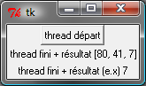
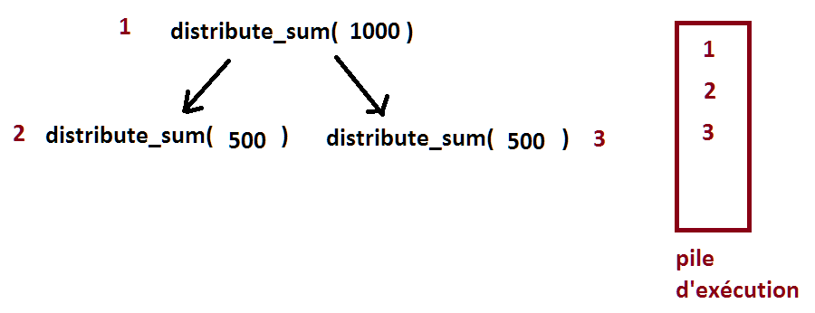
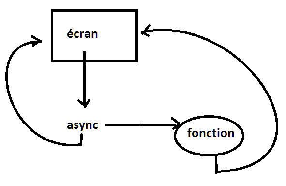

Threads#
Jusqu’aux années 2003-2004, l’évolution des microprocesseurs était une course vers une augmentation de la puissance, autant en terme de nombre de transistors qu’en fréquence de fonctionnement. Arrivant aux limites de la technologie actuelle, cette évolution s’est tournée maintenant vers la construction de processeurs multicoeurs, c’est-à-dire des machines capables d’exécuter des programmes simultanément, de maintenir plusieurs fils d’exécution en parallèle.
Les threads ou fils d’exécution ont trois usages principaux. Le premier est relié au calcul distribué ou calcul parallèle. Par exemple, le calcul d’une intégrale sur un intervalle peut être effectué sur deux intervalles disjoints. Le résultat final est la somme des deux résultats sur chacun des intervalles. De plus, ces deux calculs sont indépendants et peuvent être menés de front. Le calcul intégral sera donc deux fois plus rapide puisque les deux intervalles seront traités en même temps. C’est la parallélisation des calculs : les deux calculs sur chaque intervalle seront affectés à deux threads simultanés.
Le second usage est couplé aux interfaces graphiques. Lorsque l’utilisateur entame un processus long après avoir cliqué sur un bouton, l’interface graphique ne réagit plus jusqu’à ce que ce processus s’achève. Afin d’éviter cet inconvénient, l’interface graphique va commencer un thread qui va exécuter ce processus. L’interface graphique n’a plus qu’à attendre la fin du thread, et pendant tout ce temps, elle sera également capable de traiter tout autre événement provenant de l’utilisateur.
Le dernier usage concerne la communication entre ordinateurs ou plus généralement la communication Internet. C’est une communication asynchrone : l’ordinateur effectue des tâches en même temps qu’il écoute un port par lequel d’autres ordinateurs communiquent avec lui. Plus précisément, le programme suit deux fils d’exécution : le fil principal et un thread qui ne fait qu’attendre et traiter les messages qu’il reçoit via un port.
La synchronisation est un point commun à ces trois usages. Ce terme désigne la dépendance entre les threads. Lors d’un calcul distribué, le résultat final dépend des résultats retournés par chaque thread, il faut donc attendre que les deux fils d’exécution aient produit le résultat attendu : il faut que les deux fils d’exécution se synchronisent.
Premier thread#
Le premier exemple consiste à exécuter un thread uniquement
destiné à faire des affichages. Deux fils d’exécution vont être
lancés en parallèle affichant chacun un message différent.
Les affichages vont s’entremêler. Il existe plusieurs manières
d’exécuter un thread, une seule sera présentée en utilisant la
classe Thread du module threading.
Pour créer un thread, il suffit de surcharger la méthode run de la classe
Thread. Si le thread a besoin de données lors de son exécution,
il faut surcharger son constructeur sans oublier d’appeler le
constructeur de la classe mère. L’exécution de thread commence par
la création d’une instance et l’appel à la méthode start.
En résumé, il faut retenir les éléments suivants :
surcharger la classe
threading.Thread,surcharger le constructeur sans oublier d’appeler le constructeur
threading.Thread.__init__,surcharger la méthode
run, c’est le code que devra exécuter le thread,créer une instance de la nouvelle classe et appeler la méthode
startpour lancer le thread secondaire qui formera le second fil d’exécution.
Le programme principal est appelé le thread principal. Voici ce que cela donne dans un exemple :
<<<
import threading, time
class MonThread(threading.Thread):
def __init__(self, jusqua): # jusqua = donnée supplémentaire
threading.Thread.__init__(self) # ne pas oublier cette ligne
# (appel au constructeur de la classe mère)
self.jusqua = jusqua # donnée supplémentaire ajoutée à la classe
def run(self):
for i in range(0, self.jusqua):
print("thread ", i)
time.sleep(0.08) # attend 100 millisecondes sans rien faire
# facilite la lecture de l'affichage
m = MonThread(10) # crée le thread
m.start() # démarre le thread,
# l'instruction est exécutée en quelques millisecondes
# quelque soit la durée du thread
for i in range(0, 10):
print("programme ", i)
time.sleep(0.1) # attend 100 millisecondes sans rien faire
# facilite la lecture de l'affichage
>>>
thread 0
programme 0
thread 1
programme 1
thread 2
programme 2
thread 3
programme 3
thread 4
thread 5
programme 4
thread 6
programme 5
thread 7
programme 6
thread 8
programme 7
thread 9
programme 8
programme 9
Le programme affiche des lignes qui proviennent du thread principal et du thread secondaire dont les affichages diffèrent.
Le précédent programme a été adapté pour lancer deux threads secondaires en plus du thread principal. Les lignes modifiées par rapport au programme précédent sont commentées.
<<<
import threading, time
class MonThread(threading.Thread):
def __init__(self, jusqua, s):
threading.Thread.__init__(self)
self.jusqua = jusqua
self.s = s
def run(self):
for i in range(0, self.jusqua):
print("thread ", self.s, " : ", i)
time.sleep(0.09)
m = MonThread(10, "A")
m.start()
m2 = MonThread(10, "B") # crée un second thread
m2.start() # démarre le thread,
for i in range(0, 10):
print("programme ", i)
time.sleep(0.1)
>>>
thread A : 0
thread B : 0
programme 0
thread A : 1
thread B : 1
programme 1
thread A : 2
thread B : 2
programme 2
thread A : 3
thread B : 3
programme 3
thread A : 4
thread B : 4
programme 4
thread A : 5
thread B : 5
programme 5
thread A : 6
thread B : 6
programme 6
thread A : 7
thread B : 7
programme 7
thread A : 8
thread B : 8
programme 8
thread A : 9
thread B : 9
programme 9
Tous les exemples présentés dans ce chapitre font souvent intervenir l’instruction time.sleep(…). A moins que ce ne soit explicitement précisé, elle sert la plupart du temps à ralentir l’exécution du programme cité en exemple afin que celle-ci soit humainement observable ou pour exagérer un défaut de synchronisation. Cette fonction est d’ordinaire beaucoup moins fréquente.
Synchronisation#
Attente#
La première situation dans laquelle on a besoin de synchroniser
deux threads est l’attente d’un thread secondaire par le thread principal.
Et pour ce faire, on a besoin de l’accès par les deux fils d’exécution
à une même variable qui indiquera l’état du thread. Dans le programme suivant,
on ajoute l’attribut etat à la classe MonThread qui va indiquer l’état du thread :
Truepour en marcheFalsepour à l’arrêt
Le thread principal va simplement vérifier l’état du thread
de temps en temps. Le premier point important est tout d’abord
d’attendre que le thread se lance car sans la première boucle,
le thread pourrait passer à l’état True après être passé dans la
seconde boucle d’attente.
Le second point important est de ne pas oublier d’insérer la fonction
sleep afin de permettre au thread principal de temporiser.
Dans le cas contraire, le thread principal passe l’essentiel de son temps à
vérifier l’état du thread secondaire, ce faisant, il ralentit
l’ordinateur par la répétition inutile de la même action un trop grand nombre
de fois. Ici, le thread principal vérifie l’état du thread secondaire
tous les 100 millisecondes. Cette durée dépend de ce que fait le thread secondaire.
<<<
import threading, time
class MonThread(threading.Thread):
def __init__(self, jusqua):
threading.Thread.__init__(self)
self.jusqua = jusqua
self.etat = False # l'état du thread est soit False (à l'arrêt)
# soit True (en marche)
def run(self):
self.etat = True # on passe en mode marche
for i in range(0, self.jusqua):
print("thread itération ", i)
time.sleep(0.1)
self.etat = False # on revient en mode arrêt
m = MonThread(10) # crée un thread
m.start() # démarre le thread,
print("début")
while m.etat == False:
# on attend que le thread démarre
time.sleep(0.1) # voir remarque ci-dessous
while m.etat == True:
# on attend que le thread s'arrête
# il faut introduire l'instruction time.sleep pour temporiser, il n'est pas
# nécessaire de vérifier sans cesse que le thread est toujours en marche
# il suffit de le vérifier tous les 100 millisecondes
# dans le cas contraire, la machine passe son temps à vérifier au lieu
# de se consacrer à l'exécution du thread
time.sleep(0.1)
print("fin")
>>>
thread itération 0
début
thread itération 1
thread itération 2
thread itération 3
thread itération 4
thread itération 5
thread itération 6
thread itération 7
thread itération 8
thread itération 9
fin
Ce mécanisme d’attente peut également être codé en utilisation les objets Condition et Event. Ces deux objets permettent d’éviter l’utilisation de la méthode sleep.
<<<
import threading, time
class MonThread(threading.Thread):
def __init__(self, jusqua, event): # event = objet Event
threading.Thread.__init__(self) # = donnée supplémentaire
self.jusqua = jusqua
self.event = event # on garde un accès à l'objet Event
def run(self):
for i in range(0, self.jusqua):
print("thread itération ", i)
time.sleep(0.1)
self.event.set() # on indique qu'on a fini :
# on active l'object self.event
print("début")
event = threading.Event() # on crée un objet de type Event
event.clear() # on désactive l'ojet Event
m = MonThread(10, event) # crée un thread
m.start() # démarre le thread,
event.wait() # on attend jusqu'à ce que l'objet soit activé
# event.wait (0.1) : n'attend qu'un
print("fin") # seulement 1 dizième de seconde
>>>
début
thread itération 0
thread itération 1
thread itération 2
thread itération 3
thread itération 4
thread itération 5
thread itération 6
thread itération 7
thread itération 8
thread itération 9
fin
La méthode wait de l’objet Event attend que l’objet soit activé. Elle peut attendre indéfiniment ou attendre pendant une durée donnée seulement. Pour afficher la durée d’attente, on pourrait utiliser une boucle comme la suivante :
m.start ()
while not event.is_set():
print("j'attends")
event.wait (0.1)
print("fin")
La méthode is_set
permet de savoir si l’événement est bloquant ou non. Le programme affiche
"j'attends" puis attend le thread un dixième de secondes.
Au delà de cette durée, il vérifie l’état de l’événement puis recommence si le thread n’est pas fini.
Ces objets de synchronisation sont plus efficaces que le mécanisme décrit dans le premier programme car il fait appel aux fonctions du système d’exploitation.
Partage d’informations#
La seconde situation dans laquelle on a besoin de synchroniser est
l’accès par deux fils d’exécution aux mêmes informations ou plutôt
aux mêmes variables. Un problème survient quand parfois un thread lit
ou modifie en même temps qu’un autre modifie la même variable.
Le second cas de synchronisation est l’ajout de verrous qui permettent
de protéger une partie du code d’un programme contre plusieurs accès
simultanés.indexfrr{thread}{verrou} Ce verrou est également un objet du module
threading : Lock.
Dans cet exemple, l’information partagée est la chaîne de caractères
message, le verrou sert à protéger la fonction ajoute contre des
ajouts simultanés. Si les deux threads veulent modifier message en même temps,
un thread va entrer dans la fonction ajoute alors que l’autre n’en est
pas encore sorti. Les résultats seraient imprévisibles car cette fonction
modifie la variable qu’ils utilisent. On aboutit à l’exemple suivant :
début
longueur 20
message = 11111111112222222222
Les trois instructions protégées pourraient être résumées en une seule :
message += c ; le résultat resterait inchangé.
En revanche, en commentant les instructions
verrou.acquire()
et verrou.release()
de ce programme (marquées d’une étoile).
La longueur du résultat final message est variable alors qu’elle devrait être de 20
puisque les deux threads appellent chacun 10 fois dans la fonction
ajoute. Le tableau suivant montre l’évolution des variables
message, c, s durant deux premiers appels qui s’entremêlent.
Le résultat devrait être "12" pour message mais un caractère a été perdu.
Il faut retenir que si la variable message est globale,
les deux autres c, s sont locales et donc différentes pour les deux threads.
ordre |
thread 1 |
thread 2 |
|
|
|
|---|---|---|---|---|---|
1 |
|
|
|
|
|
2 |
|
|
|
|
|
3 |
|
|
|
|
|
4 |
|
|
|
|
|
5 |
|
|
|
|
|
6 |
|
|
|
|
Le verrou empêche d’exécuter une même portion de code en même temps, un code qui modifie des données partagées. C’est pourquoi le verrou est souvent déclaré au même endroit que les données qu’il protège. Le verrou de type Lock n’autorise qu’un seul thread à la fois à l’intérieur de la portion de code protégée ce qui aboutit au schéma suivant :
ordre |
thread 1 |
thread 2 |
|
|
|
|---|---|---|---|---|---|
1 |
|
|
|
|
|
2 |
|
|
|
|
|
3 |
|
|
|
|
|
4 |
|
|
|
|
|
5 |
|
|
|
|
|
6 |
|
|
|
|
Le verrou de type Semaphore autorise un nombre maximal de thread à parcourir le même code. Ce procédé est parfois utile si le code en question permet d’imprimer un document. Cela permet de limiter sans interdire les accès simultanés aux ressources de l’ordinateur.
Ce mécanisme de verrou peut aboutir à des blocages avec deux threads et deux portions de code protégées. Chaque thread est « coincé » dans une section attendant que l’autre libère la sienne. Dans ce cas de figure, il est conseillé d’utiliser le même verrou pour protéger les deux sections. Ainsi, chaque thread ne pourra pas entrer dans l’une ou l’autre des portions de code protégées tant que l’une d’entre elles est visitée par l’autre thread.
Interface graphique#
Un programme bâti autour d’une interface graphique inclut nécessairement une boucle de message. Celle-ci attend les messages en provenance de l’interface. Lorsqu’un de ceux-ci lui commande de lancer un traitement long, l’interface graphique n’est plus en mesure de réagir aux événements qui lui viennent pendant ce temps. Afin de remédier cela, il suffit d’insérer le traitement dans un thread. A la fin de ce dernier, un événement sera envoyé à l’interface afin de lui signifier la fin du traitement.
Le paragraphe Associer n’importe quel événement à un objet a montré comment associer un événement
particulier à une fenêtre. La différence ici est que l’événement accroché à la
fenêtre n’est pas prédéfini par le module
Tkinter
mais par le programme lui-même - dans cet exemple <<thread_fini>> -.
Les symboles <<>> au début et à la fin du nom de l’événement sont la seule contrainte.
La méthode event_generate permet d’insérer un message dans la boucle de
messages de façon à ce que celui-ci soit traité au même titre qu’un clic de souris, la pression d’une touche, …
import threading, time, random, copy
# définition du thread
class MonThread (threading.Thread) :
def __init__ (self, win, res) :
threading.Thread.__init__ (self)
self.win = win # on mémorise une référence sur la fenêtre
self.res = res
def run (self) :
for i in range (0, 10) :
print("thread ", i)
time.sleep (0.1)
# afin que le thread retourne un résultat
# self.res désigne thread_resultat qui reçoit un nombre de plus
h = random.randint (0,100)
self.res.append (h)
# on lance un événement <<thread_fini>> à la fenêtre principale
# pour lui dire que le thread est fini, l'événement est ensuite
# géré par la boucle principale de messages
# on peut transmettre également le résultat lors de l'envoi du message
# en utilisant un attribut de la classe Event pour son propre compte
self.win.event_generate ("<<thread_fini>>", x = h)
thread_resultat = []
def lance_thread () :
global thread_resultat
# fonction appelée lors de la pression du bouton
# on change la légnde de la zone de texte
text .config (text = "thread démarré")
text2.config (text = "thread démarré")
# on désactive le bouton pour éviter de lancer deux threads en même temps
bouton.config (state = TK.DISABLED)
# on lance le thread
m = MonThread (root, thread_resultat)
m.start ()
def thread_fini_fonction (e) :
global thread_resultat
# fonction appelée lorsque le thread est fini
print("la fenêtre sait que le thread est fini")
# on change la légende de la zone de texte
text .config (text = "thread fini + résultat " + str (thread_resultat))
text2.config (text = "thread fini + résultat (e.x) " + str (e.x))
# on réactive le bouton de façon à pouvoir lancer un autre thread
bouton.config (state = TK.NORMAL)
import tkinter as TK
# on crée la fenêtre
root = TK.Tk ()
bouton = TK.Button (root, text = "thread départ", command = lance_thread)
text = TK.Label (root, text = "rien")
text2 = TK.Label (root, text = "rien")
bouton.pack ()
text.pack ()
text2.pack ()
# on associe une fonction à un événement <<thread_fini>> propre au programme
root.bind ("<<thread_fini>>", thread_fini_fonction)
# on active la boucle principale de message
root.mainloop ()
L’image suivante est la fenêtre affichée par le programme lorsqu’elle attend la pression du bouton qui lance le thread et lorsqu’elle attend la fin de l’exécution de ce thread.

|
 |
Le programme précédent utilise une astuce pour retourner un résultat
autrement qu’un utilisant un paramètre global. On peut
adjoindre lors de l’appel à la méthode event_generate
quelques informations supplémentaires attachées à l’événement
en utilisant les attributs prédéfinis de la classe Event.
Dans cet exemple, on utilise l’attribut x pour retourner
le dernier entier tiré aléatoirement.
La première image est la fenêtre après trois exécutions du thread.
La liste thread_resultat contient
trois nombres. Une fois l’unique bouton pressé, la fenêtre change d’aspect pour devenir comme la seconde image.
Cette transition est assurée par la fonction lance_thread reliée au bouton.
La transition inverse est assurée par la fonction thread_fini_fonction
qui est reliée à l’événement que génère le thread lorsqu’il a terminé.
Files de messages#
Les trois usages principaux des threads sont le calcul distribué, la conception d’une interface graphique réactive et l’attente permanente d’événements. En ce qui concernent les deux premiers usages, on peut considérer qu’il existe un thread principal qui lance et attend l’exécution de threads secondaires. Les échanges d’informations ont lieu au début et à la fin de chaque thread. Il n’est pas toujours nécessaire de partager des variables en cours d’exécution : l’usage de verrous est peu fréquent pour ces deux schémas sauf pour partager des informations en cours d’exécution. Ils ralentissent considérablement l’exécution d’un programme.
En ce qui concerne le troisième usage, c’est un cas où tout au long du programme, il y a constamment au moins deux threads actifs : un thread principal et un thread qui attend. Dans ce cas, l’échange et la synchronisation d’informations est inévitable et il est souvent fastidieux de concevoir la synchronisation. C’est pourquoi on la conçoit presque toujours sous forme de messages que les threads s’envoient.
Il existe un objet Queue qui facilite cet aspect. C’est une liste qui possède son propre verrou de sorte que n’importe quel thread peut ajouter ou retirer des éléments de cette liste. Elle est utilisée principalement via quatre méthodes. Deux méthodes get sont utilisées au sein du thread qui possède la pile. Deux méthodes put sont appelées par des threads étrangers.
|
Retourne un élément de la liste ou attend qu’il y en ait un,
le supprime si elle en trouve un. Si |
|
Retourne un élément de la liste s’il y a en un, dans ce cas, cet élément est supprimé. Dans le cas contraire, la méthode déclenche l’exception Empty. |
|
Ajoute l’élément |
|
Ajoute l’élément |
|
Retourne la taille de la pile. |
Cette pile est utilisée dans l’exemple qui suit pour simuler deux joueurs
qui essaye de découvrir le nombre que l’autre joueur a tiré au hasard.
A chaque essai, un joueur envoie un message de type ("essai", n)
à l’autre joueur pour dire qu’il joue le nombre n. Ce joueur lui répond
avec des messages de type ("dessous", n), ("dessus", n), ("gagne", n).
A : je joue ( 10 )
B : je joue ( 8 )
A : je tente 10 écart 10 à traiter 0
A : je tente 2 écart 10 à traiter 0
B : je tente 4 écart 10 à traiter 1
A : je tente 8 écart 9 à traiter 0
A : je tente 4 écart 9 à traiter 0
B : je tente 9 écart 10 à traiter 3
A : je tente 4 écart 6 à traiter 0
A : je tente 8 écart 6 à traiter 0
A : je tente 5 écart 6 à traiter 0
A : je tente 6 écart 6 à traiter 0
A : je tente 5 écart 6 à traiter 0
B : j'ai perdu après 2 essais
B : j'arrête
A : j'ai gagné en 9 essais, solution 8
A : j'arrête
Les affichages se chevauchent parfois, il faudrait pour éviter cela synchroniser l’affichage à l’aide d’un verrou.
Multithreading plus simple#
Le module threading a beaucoup été utilisé mais d’autres modules ont été ajoutés à la distribution standard de python.
concurrent.futures: le module propose une interface similaire pour paralléliser avec des threads ou des processus. La création des threads s’écrit plus rapidement.asyncio: ce module fonctionne avec les mots-clés async, await et il est particulièrement adapté à la parallélisation à des accès aux ressources.
Le premier module est plus adapté à la parallélisation des calculs, le second est particulière utile pour écrire des applications non bloquantes qui gère pas mal d’accès à Internet.
concurrent.futures#
Le module concurrent.futures
implémente une classe concurrent.futures.Executor
qui définit une interface pour l’exécution en parallèle. On peut soit :
soumettre l’exécution d’une fonction avec
concurrent.futures.Executor.submit()ou soumettre l’exécution de la même fonction appliquée à séquence de jeux de paramètres avec
concurrent.futures.Executor.map()
Cette classe est dérivée en un
concurrent.futures.ThreadPoolExecutor
dont le principal argument max_works définit le nombre de threads à exécuter en parallèle.
Je reproduis ici l”exemple
de la documentation de Python qui détermine si un nombre est premier.
<<<
import concurrent.futures
import math
PRIMES = [
112272535095293,
112582705942171,
112272535095293,
115280095190773,
115797848077099,
1099726899285419,
]
def is_prime(n):
if n % 2 == 0:
return False
sqrt_n = int(math.floor(math.sqrt(n)))
for i in range(3, sqrt_n + 1, 2):
if n % i == 0:
return False
return True
def main():
with concurrent.futures.ThreadPoolExecutor(2) as executor:
for number, prime in zip(PRIMES, executor.map(is_prime, PRIMES)):
print("%d is prime: %s" % (number, prime))
main()
>>>
112272535095293 is prime: True
112582705942171 is prime: True
112272535095293 is prime: True
115280095190773 is prime: True
115797848077099 is prime: True
1099726899285419 is prime: False
Débugger un programme en parallèle n’est pas chose facile car les exécutions s’entremêlent et les instructions print si elles sont insérées dans la fonction parallélisée produisent des résultats indéchiffrables.
<<<
import concurrent.futures
import math
PRIMES = [
112272535095293,
112582705942171,
112272535095293,
115280095190773,
115797848077099,
1099726899285419,
]
def is_prime(n):
print("start", n, "*")
if n % 2 == 0:
return False
sqrt_n = int(math.floor(math.sqrt(n)))
for i in range(3, sqrt_n + 1, 2):
if n % i == 0:
return False
print("end", n, "#")
return True
def main():
with concurrent.futures.ThreadPoolExecutor(2) as executor:
for number, prime in zip(PRIMES, executor.map(is_prime, PRIMES)):
print("%d is prime: %s" % (number, prime))
main()
>>>
start 112272535095293 *
start 112582705942171 *
end 112272535095293 #
start 112272535095293 *
112272535095293 is prime: True
end 112582705942171 #
start 115280095190773 *
112582705942171 is prime: True
end 112272535095293 #
start 115797848077099 *
112272535095293 is prime: True
end 115280095190773 #
start 1099726899285419 *
115280095190773 is prime: True
end 115797848077099 #
115797848077099 is prime: True
1099726899285419 is prime: False
Pour débugger, il faut utiliser le module logging (voir aussi Ecrire des logs en Python). L’exemple suivant construit un logger par thread
<<<
import concurrent.futures
import math
import logging
import sys
import threading
loggers = {}
def get_logger(name):
if name in loggers:
return loggers[name]
logger = logging.getLogger(name)
logger.setLevel(logging.DEBUG)
fmt = "%(asctime)s - %(threadName)s - %(levelname)s - %(message)s"
formatter = logging.Formatter(fmt)
# Pour un affiche sur la sortie standard mais cela s'entremêle parfois.
# ch = logging.StreamHandler(sys.stdout)
# ch.setFormatter(formatter)
# logger.addHandler(ch)
# Pour une sortie dans un fichier.
# Le mode "w" signifie que les logs de l'exécution précédente
# seront effacés.
fh = logging.FileHandler(name + ".log", "w")
fh.setFormatter(formatter)
logger.addHandler(fh)
loggers[name] = logger
return loggers[name]
PRIMES = [
112272535095293,
112582705942171,
112272535095293,
115280095190773,
115797848077099,
1099726899285419,
]
def is_prime(n):
logger = get_logger(threading.current_thread().name)
logger.info("start {}*".format(n))
if n % 2 == 0:
logger.info("end1 {}*".format(n))
return False
sqrt_n = int(math.floor(math.sqrt(n)))
for i in range(3, sqrt_n + 1, 2):
if n % i == 0:
logger.info("end2 {}*".format(n))
return False
logger.info("end3 {}*".format(n))
return True
def main():
with concurrent.futures.ThreadPoolExecutor(2, "thread") as executor:
for number, prime in zip(PRIMES, executor.map(is_prime, PRIMES)):
print("%d is prime: %s" % (number, prime))
main()
print("-----")
with open("thread_0.log", "r") as f:
print(f.read())
print("-----")
with open("thread_1.log", "r") as f:
print(f.read())
>>>
112272535095293 is prime: True
112582705942171 is prime: True
112272535095293 is prime: True
115280095190773 is prime: True
115797848077099 is prime: True
1099726899285419 is prime: False
-----
2023-08-02 22:59:54,512 - thread_0 - INFO - start 112272535095293*
2023-08-02 22:59:57,306 - thread_0 - INFO - end3 112272535095293*
2023-08-02 22:59:57,312 - thread_0 - INFO - start 115280095190773*
2023-08-02 22:59:59,475 - thread_0 - INFO - end3 115280095190773*
2023-08-02 22:59:59,481 - thread_0 - INFO - start 1099726899285419*
2023-08-02 23:00:00,228 - thread_0 - INFO - end2 1099726899285419*
-----
2023-08-02 22:59:54,513 - thread_1 - INFO - start 112582705942171*
2023-08-02 22:59:57,305 - thread_1 - INFO - end3 112582705942171*
2023-08-02 22:59:57,306 - thread_1 - INFO - start 112272535095293*
2023-08-02 22:59:59,427 - thread_1 - INFO - end3 112272535095293*
2023-08-02 22:59:59,433 - thread_1 - INFO - start 115797848077099*
2023-08-02 23:00:01,248 - thread_1 - INFO - end3 115797848077099*
Notion de futures#
Ce concept est apparu récemment dans les langages de programmation, non pas qu’il n’est jamais été utilisé avant l’an 2000 mais l’usage de plus en plus fréquent de la programmation parallélisée fait que certains concept sont nommés et intègres les langages. Les futures ou promesses font référence à un résultat dont le calcul est géré par un autre thread ou processus. Le résultat n’est pas prêt au moment où ce second thread démarre mais il le sera bientôt d’où son nom. On les retrouve en C# Programmation asynchrone avec Async et Await ou C++ std::async. Il y a deux objets futures en Python qui sont produits par différents jeux de fonctions. On ne créé jamais un futures, c’est toujours une fonction qui le fait.
concurrent.futures.Future: ils sont créés par le moduleconcurrent.futures.asyncio.future : ils sont créés par le module
asyncio.
Les deux objets possèdent la même interface et sont presque compatibles. Cela dit, il vaut mieux éviter de les mélanger. Je cite la documentation :
This class is not compatible with the wait() and as_completed() functions in the concurrent.futures package.
Distribuer l’exécution d’une fonction est relativement facile. Les choses se compliquent quand il s’agit de distribuer un calcul qui dépend d’un autre calcul distribué. Il faut enchaîner ces fonctions qu’on dit asynchrones puisque leur exécution n’est plus inscrite dans une seule et même séquence mais dans plusieurs fils d’exécution parallèles.
Un problème de blocage#
La fonction distribue le calcul de la somme des éléments d’un tableau. et elle est récursive.
<<<
import numpy
import concurrent.futures as cf
def parallel_numpy_dot(va, vb):
with cf.ThreadPoolExecutor(max_workers=2) as e:
m = va.shape[0] // 2
f1 = e.submit(numpy.dot, va[:m], vb[:m])
f2 = e.submit(numpy.dot, va[m:], vb[m:])
return f1.result() + f2.result()
va = numpy.random.randn(100000).astype(numpy.float64)
vb = numpy.random.randn(100000).astype(numpy.float64)
print(parallel_numpy_dot(va, vb))
>>>
-419.9963277987386
Il faut voir l’objet executor comme un objet qui empile les fonctions à exécuter. Le problème dans l’exemple précédent est que la fonction distribute_sum est déjà dans la pile d’exécution et attend l’exécution de deux autres appels à la même fonction placée après elle dans la pile d’exécution.
Si chaque appel à la fonction était effectué sur un thread différent, cela pourrait fonctionner. Mais ce n’est pas le cas pour cette implémentation. L’appel 1 attend la fin de 2 et 3 qui ne peuvent pas être exécutés tant que 1 n’est pas fini. Pour résoudre le problème dans ce cas ci, il faut remplacer le commentaire par la ligne suivante :
executor = concurrent.futures.ThreadPoolExecutor(max_workers=2)
async - await - asyncio#
asyncio a fait émerger les mots-clés async and await qui font partie du langage depuis la version 3.5 tout comme elles font partie d’autres langages comme C#/async ou C++.
Concrètement, ce n’est pas si difficile d’écrire une fonction
qui a vocation à être parallélisée. Ce qui devient compliqué est d’avoir
à sa disposition plein de fonctions à paralléliser. Il faut
synchroniser. Ces deux mots-clés permettent de définir une fonction
à vocation parallèle (async) et une façon d’attendre
qu’elles aient retourné un résultat (await).
Ces deux mots-clés sont une façon élégant de créer
des assemblages de fonctions indépendantes et parallélisées.
Les interfaces graphiques ne contiennent qu’un seul await ou une seule boucle de messages qui attend inlassablement que quelque chose se passe. Le mot-clé async agit comme un aiguillage. Une action est enclenchée. Elle signalera sa fin et son résultat plus tard.
Le mot-clés await sert à chaîner les fonctions parallélisées.
GIL - Global Interpreter Lock#
Le Global Interpreter Lock est un verrou qui évite à plusieurs threads de modifier le même objet en même temps. Dans les langages bas niveau, on fait la distrinction entre un tableau ou une liste qui supporte les accès concurrentiels ou non. Si elle ne les supporte pas, les accès sont plus rapides mais suppose que le dévelopeur s’occupe de gérer les problèmes de synchronisation si besoin.
Le langage Python protège listes et dictionnaires par l’intermédiaire de ce verrou qui est unique pour toutes les listes afin de pouvoir gérer efficacement le garbage collector (voir module gc). En conséquence, si le langage Python est multithread par design, dans les faits, il ne l’est presque pas car le GIL est sans cesse utilisé. Le notebook Le GIL finira de vous convaincre.
cython : un mélange de python et C#
Tout est possible avec le langage C même si cython est un mélange des de python et C. Le contexte nogil permet de relâcher la contrainte sur GIL pour une fonction ou une partie de code. Plus de liberté veut dire aussi plus d’attention à apporter au code. La page Using parallelism donne quelques exemples simples de parallélisation. Il est plus facile de paralléliser Python avec un autre langage (voir aussi Parallelizing numpy array loops with Cython and OpenMP).
C#, Java#
L’intégration de langage C est supportée par Python car l’interpéteur est implémenté en C. Utiliser d’autres langages peut se faire via une interface en C et celle-ci existe pour certains langages. C’est le cas du C# qui peut être utilisé via le module pythonnet ou encore Java via py4j, pyjnius. Les threads sont plus faciles à implémenter dans ces langages même si le garbage collector peut nuire aux performances.
Bibliographie#
articles